Chapitre 1 Les données spatiales
Il est possible d’importer, de manipuler, de traiter, d’afficher et d’exporter des données spatiales avec R. La grande majorité des opérations de géotraitement sont disponibles dans R grace au package sf. Il devient alors possible d’utiliser R comme un SIG.
1.1 Le package sf
Historique
Historiquement, trois packages permettent d’importer, de manipuler et de transformer les données spatiales :
- Le package
rgdalqui est une interface entre R et les librairies GDAL (Geospatial Data Abstraction Library) et PROJ4 permet d’importer et d’exporter les données spatiales (les shapefiles par exemple) et aussi de gérer les projections cartographiques
- Le package
spfournit des classes et methodes pour les données spatiales dans R. Il permet afficher des fond de cartes, d’inspecter une table attributaire etc.
- Le package
rgeosdonne accès à la librairie d’opérations spatiales GEOS (Geometry Engine - Open Source) et rend donc disponible les opérations SIG classiques : calcul de surface ou de périmètre, calcul de distances, aggrégations spatiales, zones tampons, intersections etc.
La suite
Le package sf ((Pebesma 2018a), (Pebesma 2018b)) a été publié fin 2016 par Edzer Pebesma (également auteur de sp). Son objectif est de combiner les fonctionnalités de sp, rgeos et rgdal dans un package unique plus ergonomique.
Ce package propose des objets plus simples (suivant le standard simple feature) dont la manipulation est plus aisée. Une attention particulière a été portée à la compatibilité du package avec la syntaxe pipe et les opérateurs du tidyverse.
Aujourd’hui, les principaux développements dans l’écosystème spatial de R se détachent progressivement des 3 anciens (sp, rgdal, rgeos) pour se reposer sur sf.
1.1.1 Format des objets spatiaux sf

Les objets sf sont des data.frame dont l’une des colonnes contient des géométries. Cette colonne est de la classe sfc (simple feature column) et chaque individu de la colonne est un sfg (simple feature geometry).
Ce format est très pratique dans la mesure ou les données et les géométries sont intrinsèquement liées dans un même objet.
1.1.2 Import / Export
Les fonctions st_read() et st_write() permettent d’importer et d’exporter de nombreux types de fichiers.
Les lignes suivantes importent le fichier shapefile de la martinique situé dans un dossier data.
Les lignes suivantes exportent l’objet mtq dans un dossier data aux formats geopackage et shapefile.
Deleting layer `mtq' using driver `GPKG'
Writing layer `mtq' to data source `data/mtq.gpkg' using driver `GPKG'
Writing 34 features with 7 fields and geometry type Multi Polygon.Deleting layer `mtq' using driver `ESRI Shapefile'
Writing layer `mtq' to data source `data/mtq.shp' using driver `ESRI Shapefile'
Writing 34 features with 7 fields and geometry type Multi Polygon.Pour importer le jeu de données proposé dans le package cartography, il faut installer le package puis utiliser le code suivant :
1.1.3 Affichage de données
Aperçu des variables via les fonctions head() et plot().
Simple feature collection with 6 features and 7 fields
geometry type: MULTIPOLYGON
dimension: XY
bbox: xmin: 695444 ymin: 1598818 xmax: 717731 ymax: 1645182
CRS: 32620
INSEE_COM STATUS LIBGEO POP MED CHOM ACT
1 97201 Simple municipality L'Ajoupa-Bouillon 1902 13633 254 801
2 97202 Simple municipality Les Anses-d'Arlet 3737 14558 425 1659
3 97203 Simple municipality Basse-Pointe 3357 14456 400 1395
4 97204 Simple municipality Le Carbet 3683 18847 285 1568
5 97205 Simple municipality Case-Pilote 4458 21005 347 2096
6 97206 Simple municipality Le Diamant 5976 19704 430 2654
geom
1 MULTIPOLYGON (((699261 1637...
2 MULTIPOLYGON (((709840 1599...
3 MULTIPOLYGON (((697602 1638...
4 MULTIPOLYGON (((702229 1628...
5 MULTIPOLYGON (((698805 1621...
6 MULTIPOLYGON (((709840 1599...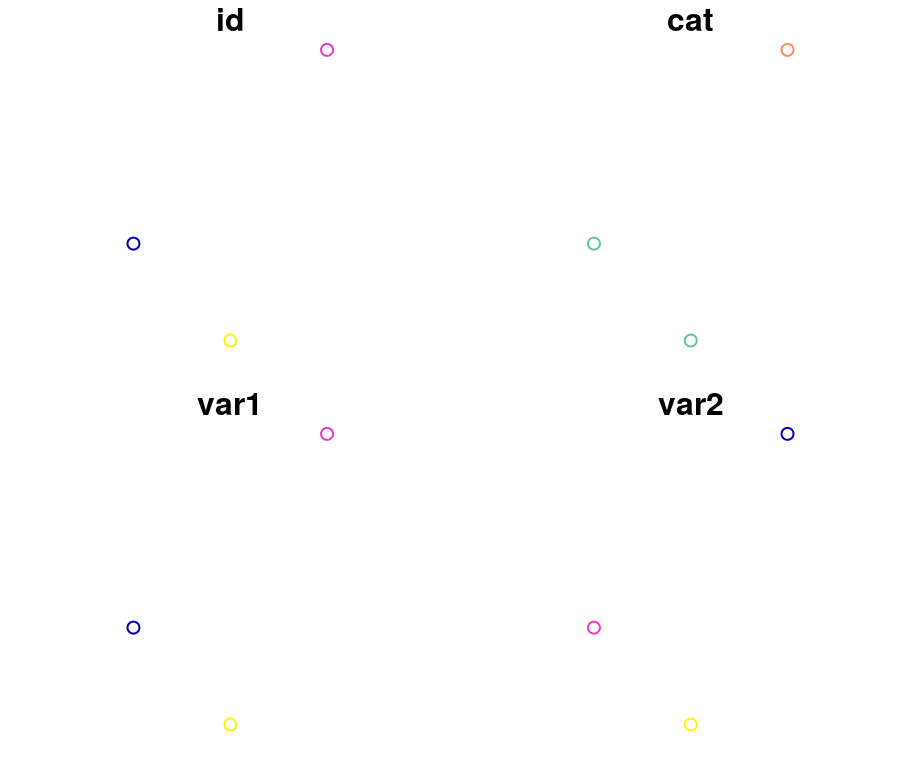
Affichage de la géométrie uniquement.
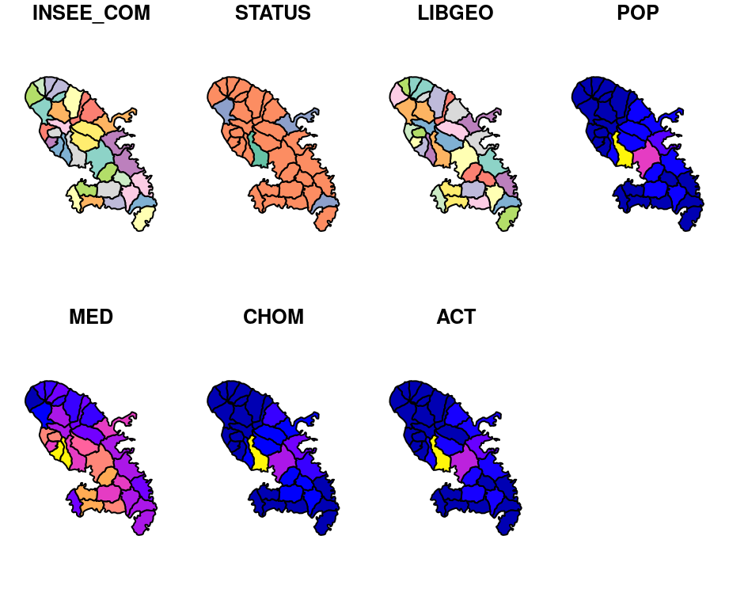
1.1.4 Joindre des données
On peut joindre un data.frame à un objet sf en utilisant la fonction merge().
ID NOM Population.totale
1 97201 L' Ajoupa-Bouillon 1964
2 97202 Les Anses-d'Arlet 3686
3 97203 Basse-Pointe 3238
4 97234 Bellefontaine 1760
5 97204 Le Carbet 3655
6 97205 Case-Pilote 4522Simple feature collection with 6 features and 9 fields
geometry type: MULTIPOLYGON
dimension: XY
bbox: xmin: 695444 ymin: 1598818 xmax: 717731 ymax: 1645182
CRS: 32620
INSEE_COM STATUS LIBGEO POP MED CHOM ACT NOM
1 97201 Simple municipality L'Ajoupa-Bouillon 1902 13633 254 801 L' Ajoupa-Bouillon
2 97202 Simple municipality Les Anses-d'Arlet 3737 14558 425 1659 Les Anses-d'Arlet
3 97203 Simple municipality Basse-Pointe 3357 14456 400 1395 Basse-Pointe
4 97204 Simple municipality Le Carbet 3683 18847 285 1568 Le Carbet
5 97205 Simple municipality Case-Pilote 4458 21005 347 2096 Case-Pilote
6 97206 Simple municipality Le Diamant 5976 19704 430 2654 Le Diamant
Population.totale geometry
1 1964 MULTIPOLYGON (((699261 1637...
2 3686 MULTIPOLYGON (((709840 1599...
3 3238 MULTIPOLYGON (((697602 1638...
4 3655 MULTIPOLYGON (((702229 1628...
5 4522 MULTIPOLYGON (((698805 1621...
6 5886 MULTIPOLYGON (((709840 1599...1.2 Les systèmes de projections
1.2.1 Consulter la projection d’un objet
La fonction st_crs() permet de consulter le système de projection utilisé par un objet sf et de la modifier (sans reprojeter les données).
Coordinate Reference System:
User input: 32620
wkt:
PROJCS["WGS 84 / UTM zone 20N",
GEOGCS["WGS 84",
DATUM["WGS_1984",
SPHEROID["WGS 84",6378137,298.257223563,
AUTHORITY["EPSG","7030"]],
AUTHORITY["EPSG","6326"]],
PRIMEM["Greenwich",0,
AUTHORITY["EPSG","8901"]],
UNIT["degree",0.0174532925199433,
AUTHORITY["EPSG","9122"]],
AUTHORITY["EPSG","4326"]],
PROJECTION["Transverse_Mercator"],
PARAMETER["latitude_of_origin",0],
PARAMETER["central_meridian",-63],
PARAMETER["scale_factor",0.9996],
PARAMETER["false_easting",500000],
PARAMETER["false_northing",0],
UNIT["metre",1,
AUTHORITY["EPSG","9001"]],
AXIS["Easting",EAST],
AXIS["Northing",NORTH],
AUTHORITY["EPSG","32620"]]1.2.2 Modifier la projection d’un objet
La fonction st_transform() permet de reprojeter un objet sf.
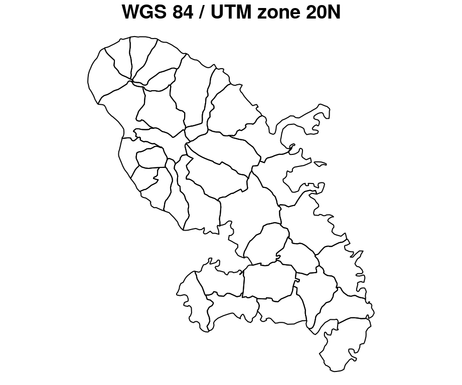
 Le site Spatial Reference met à disposition les références de très nombreux systèmes de projection.
Le site Spatial Reference met à disposition les références de très nombreux systèmes de projection.
1.3 Opérations de géotraitement
1.3.1 Sélection par attributs
Les objets sf sont des data.frame, on peut donc sélectionner leur lignes et leur colonnes de la même manière que les data.frame.
Simple feature collection with 2 features and 9 fields
geometry type: MULTIPOLYGON
dimension: XY
bbox: xmin: 697602 ymin: 1598818 xmax: 710462 ymax: 1640653
CRS: 32620
INSEE_COM STATUS LIBGEO POP MED CHOM ACT NOM
1 97201 Simple municipality L'Ajoupa-Bouillon 1902 13633 254 801 L' Ajoupa-Bouillon
2 97202 Simple municipality Les Anses-d'Arlet 3737 14558 425 1659 Les Anses-d'Arlet
Population.totale geometry
1 1964 MULTIPOLYGON (((699261 1637...
2 3686 MULTIPOLYGON (((709840 1599...Simple feature collection with 1 feature and 9 fields
geometry type: MULTIPOLYGON
dimension: XY
bbox: xmin: 704269 ymin: 1614308 xmax: 711651 ymax: 1626937
CRS: 32620
INSEE_COM STATUS LIBGEO POP MED CHOM ACT NOM
9 97209 Prefecture Fort-de-France 82502 16927 10046 37615 Fort-de-France
Population.totale geometry
9 82030 MULTIPOLYGON (((706345 1626...Simple feature collection with 1 feature and 4 fields
geometry type: MULTIPOLYGON
dimension: XY
bbox: xmin: 704269 ymin: 1614308 xmax: 711651 ymax: 1626937
CRS: 32620
INSEE_COM STATUS LIBGEO POP geometry
9 97209 Prefecture Fort-de-France 82502 MULTIPOLYGON (((706345 1626...1.3.2 Sélection spatiale
Sélection des communes intesectant Fort-de-France
fdf <- mtq[mtq$LIBGEO == "Fort-de-France", ]
mtq$fdf <- st_intersects(x = mtq, y = fdf, sparse = FALSE)
plot(st_geometry(mtq))
plot(st_geometry(mtq[mtq$fdf,]), col = "grey", add = TRUE)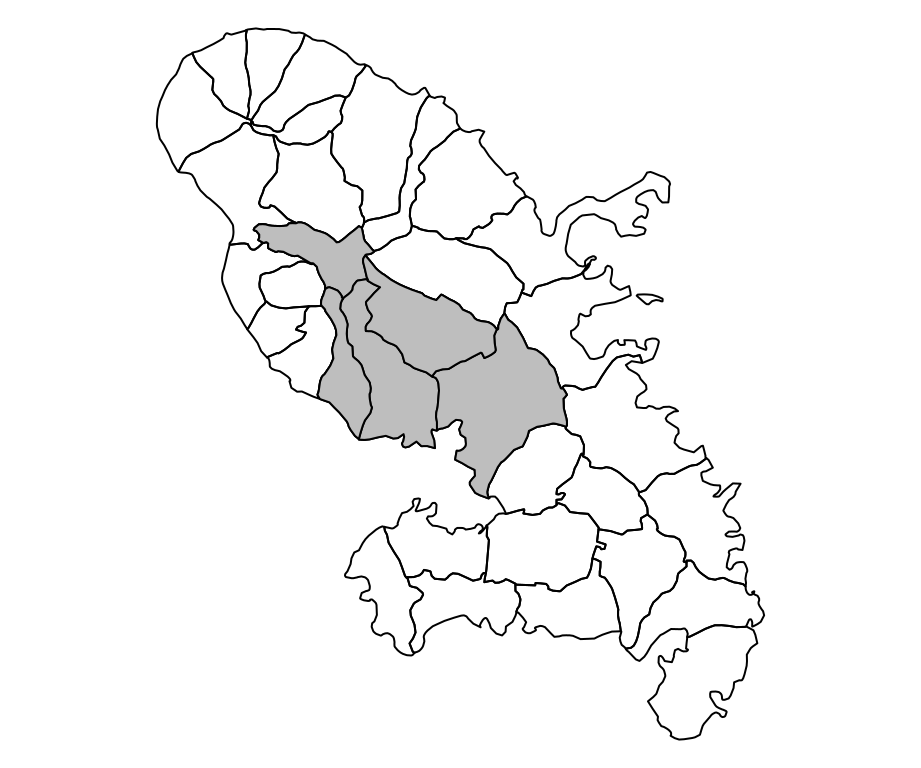
1.3.3 Extraire des centroides
mtq_c <- st_centroid(mtq)
plot(st_geometry(mtq))
plot(st_geometry(mtq_c), add=TRUE, cex=1.2, col="red", pch=20)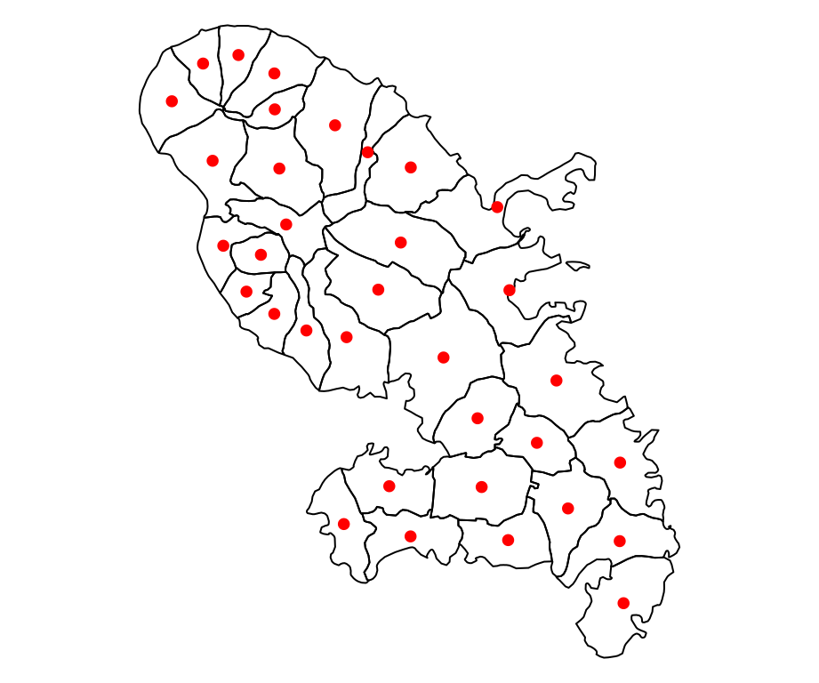
1.3.4 Créer une matrice de distances
Si le système de projection du jeu de données est renseigné les distances sont exprimées dans l’unité de mesure de la projection (en mètres le plus souvent).
Units: [m]
[,1] [,2] [,3] [,4] [,5]
[1,] 0.000 35316.29 3019.561 12247.132 17181.321
[2,] 35316.293 0.00 38303.361 25478.399 18597.357
[3,] 3019.561 38303.36 0.000 15099.121 20200.611
[4,] 12247.132 25478.40 15099.121 0.000 7149.189
[5,] 17181.321 18597.36 20200.611 7149.189 0.0001.3.5 Agréger des polygones
mtq_u <- st_union(mtq)
plot(st_geometry(mtq), col="lightblue")
plot(st_geometry(mtq_u), add=T, lwd=2, border = "red")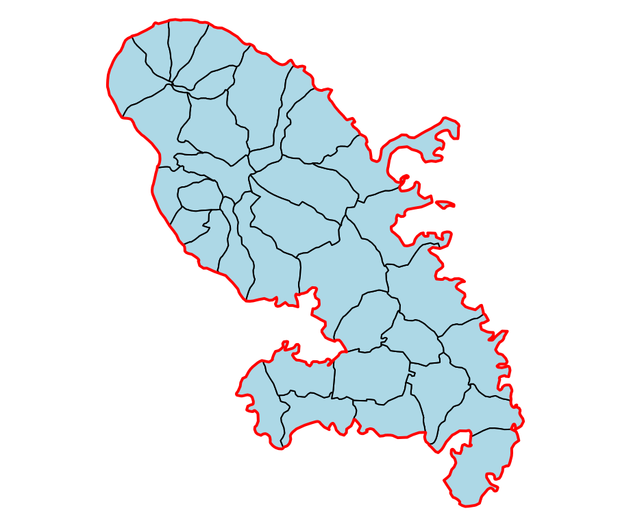
1.3.6 Agréger des polygones en fonction d’une variable
mtq_u2 <- aggregate(x = mtq[,c("POP", "CHOM", "ACT")],
by = list(STATUS = mtq$STATUS),
FUN = "sum")
plot(mtq_u2["STATUS"], key.pos = NULL)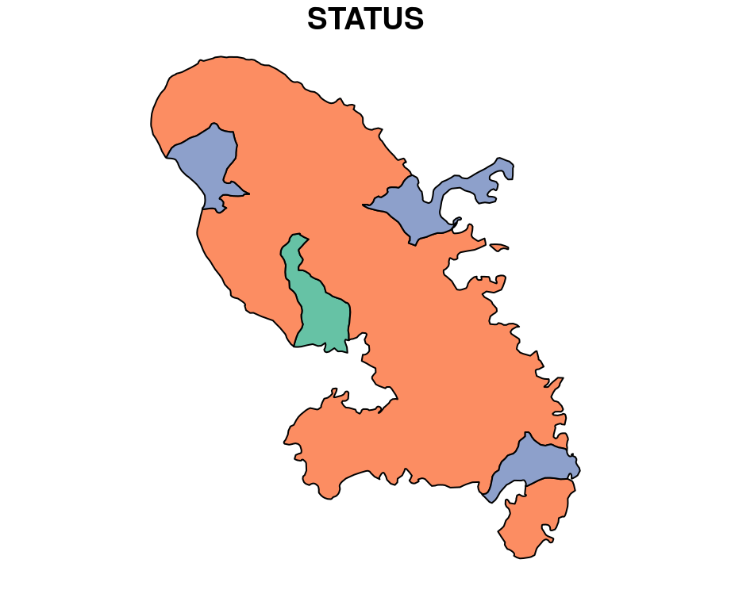
1.3.7 Construire une zone tampon
mtq_b <- st_buffer(x = mtq_u, dist = 2000)
plot(st_geometry(mtq), col="lightblue")
plot(st_geometry(mtq_u), add=T, lwd=2)
plot(st_geometry(mtq_b), add=T, lwd=2, border = "red")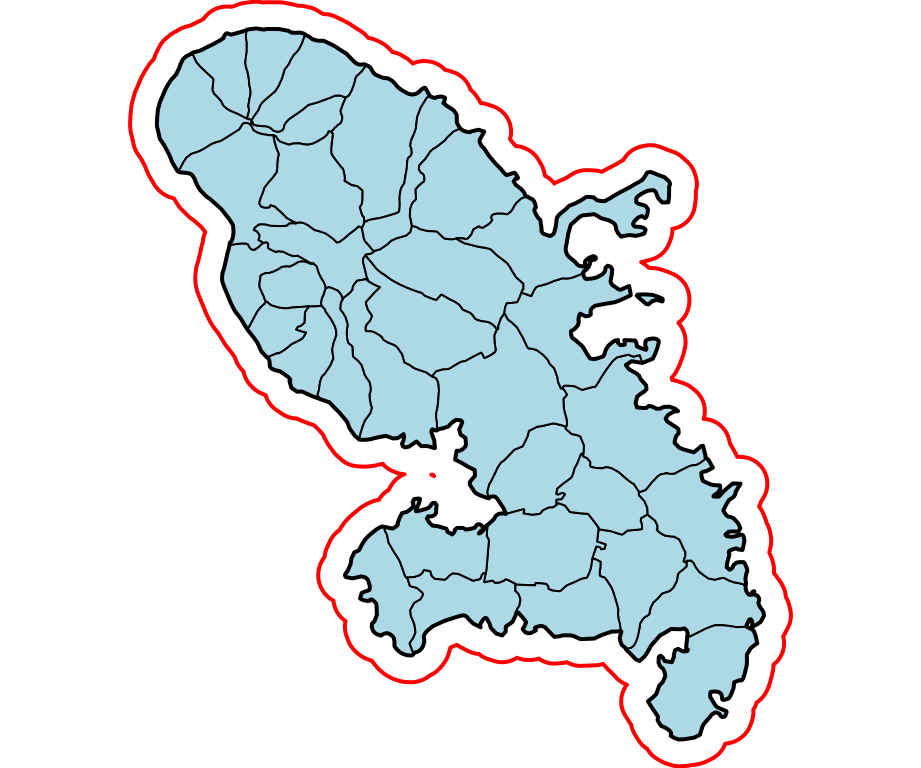
1.3.8 Réaliser une intersection
m <- rbind(c(700015,1624212), c(700015,1641586), c(719127,1641586),
c(719127,1624212), c(700015,1624212))
p <- st_sf(st_sfc(st_polygon(list(m))), crs = st_crs(mtq))
plot(st_geometry(mtq))
plot(p, border="red", lwd=2, add=T)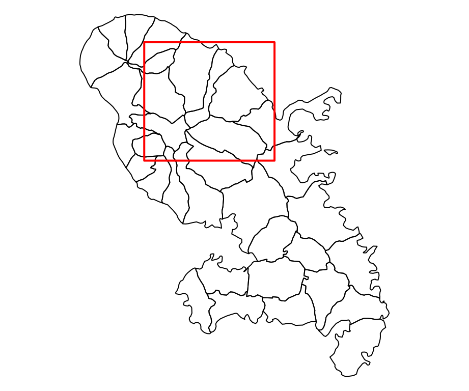
mtq_z <- st_intersection(x = mtq, y = p)
plot(st_geometry(mtq))
plot(st_geometry(mtq_z), col="red", border="green", add=T)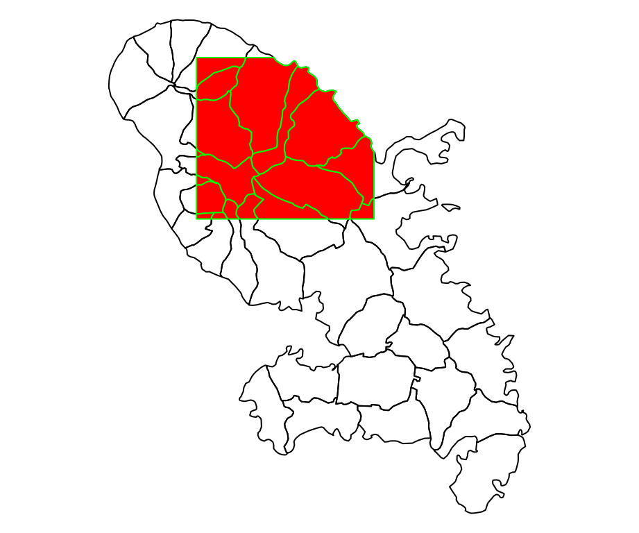
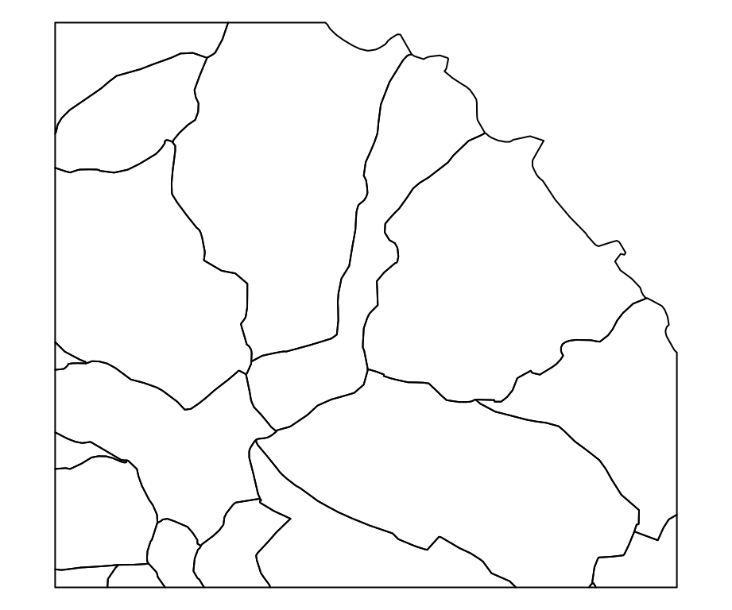
1.3.9 Compter des points dans un polygone
pts <- st_sample(x = mtq, size = 50)
plot(st_geometry(mtq))
plot(pts, pch = 20, col = "red", add=TRUE, cex = 1)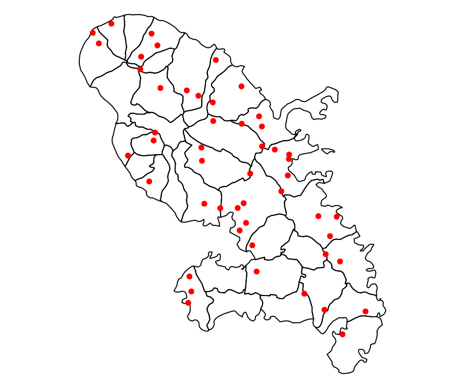
inter <- st_intersects(mtq, pts)
mtq$nbpts <- sapply(X = inter, FUN = length)
plot(st_geometry(mtq))
plot(st_geometry(mtq[mtq$nbpts>2,]), col = "grey", add=TRUE)
plot(pts, pch = 20, col = "red", add=TRUE, cex = 1)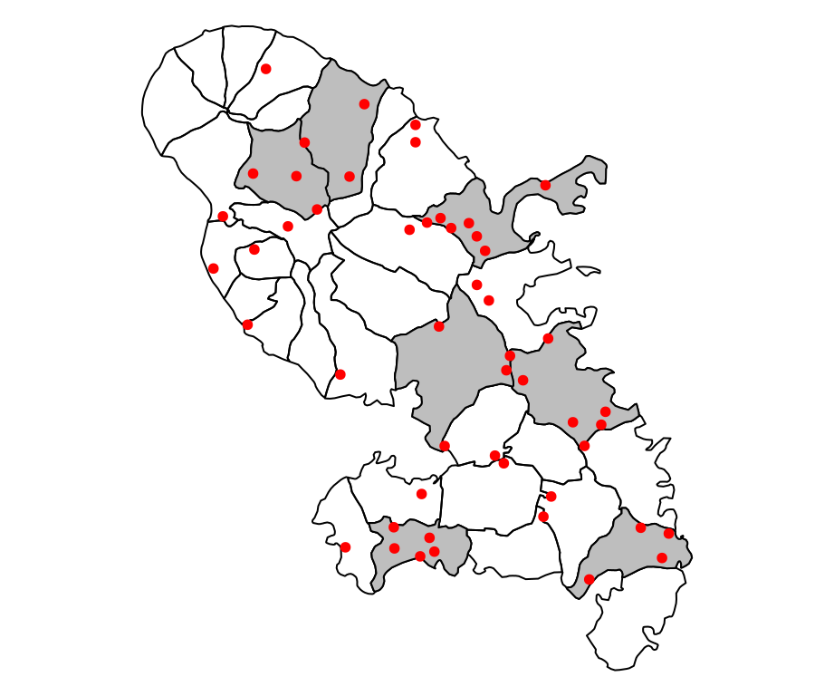
1.3.10 Construire des polygones de Voronoi
google: “st_voronoi R sf” (https://github.com/r-spatial/sf/issues/474 & https://stackoverflow.com/questions/45719790/create-voronoi-polygon-with-simple-feature-in-r)
mtq_v <- st_voronoi(x = st_union(mtq_c))
mtq_v <- st_intersection(st_cast(mtq_v), st_union(mtq))
mtq_v <- st_join(x = st_sf(mtq_v), y = mtq_c, join=st_intersects)
mtq_v <- st_cast(mtq_v, "MULTIPOLYGON")
plot(st_geometry(mtq_v), col='lightblue')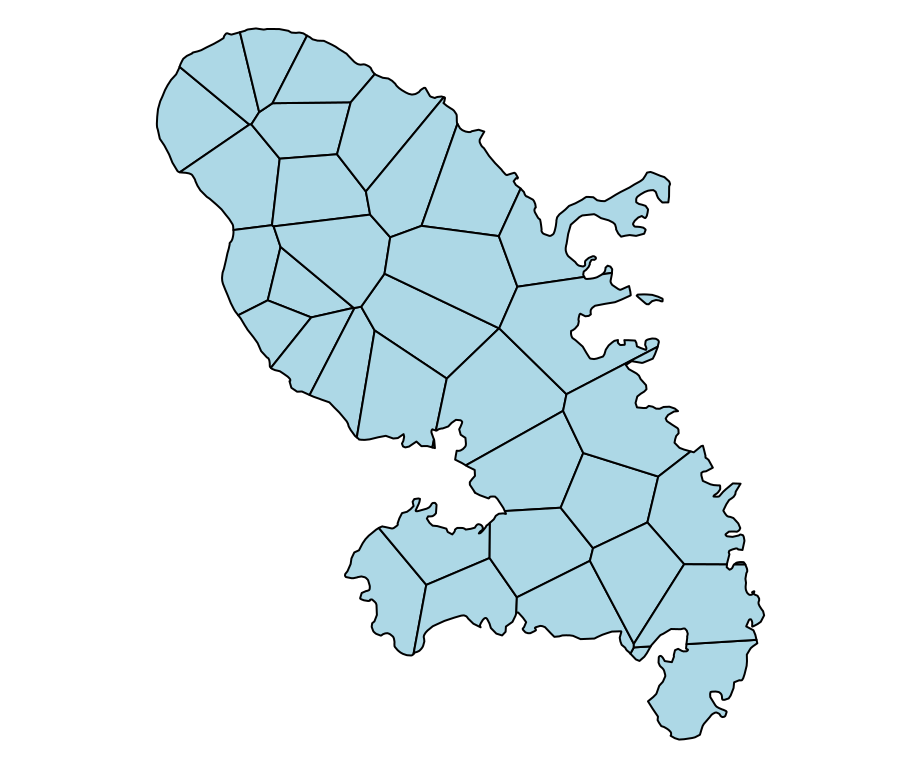
1.3.11 Construction d’objets sf
1.3.11.1 POINTS
library(sf)
pt1_sfg <- st_point(c(1,2))
pt2_sfg <- st_point(c(3,4))
pt3_sfg <- st_point(c(2,1))
(pt_sfc <- st_sfc(pt1_sfg,pt2_sfg,pt3_sfg, crs = (4326)))Geometry set for 3 features
geometry type: POINT
dimension: XY
bbox: xmin: 1 ymin: 1 xmax: 3 ymax: 4
CRS: EPSG:4326pt_df <- data.frame(id= c(1,2,3), cat = c("A", "B", "A"),
var1 = c(10,20,30), var2 = c(2.3,1.9,4))
(pt_sf <- st_sf(pt_df,geometry = pt_sfc))Simple feature collection with 3 features and 4 fields
geometry type: POINT
dimension: XY
bbox: xmin: 1 ymin: 1 xmax: 3 ymax: 4
CRS: EPSG:4326
id cat var1 var2 geometry
1 1 A 10 2.3 POINT (1 2)
2 2 B 20 1.9 POINT (3 4)
3 3 A 30 4.0 POINT (2 1)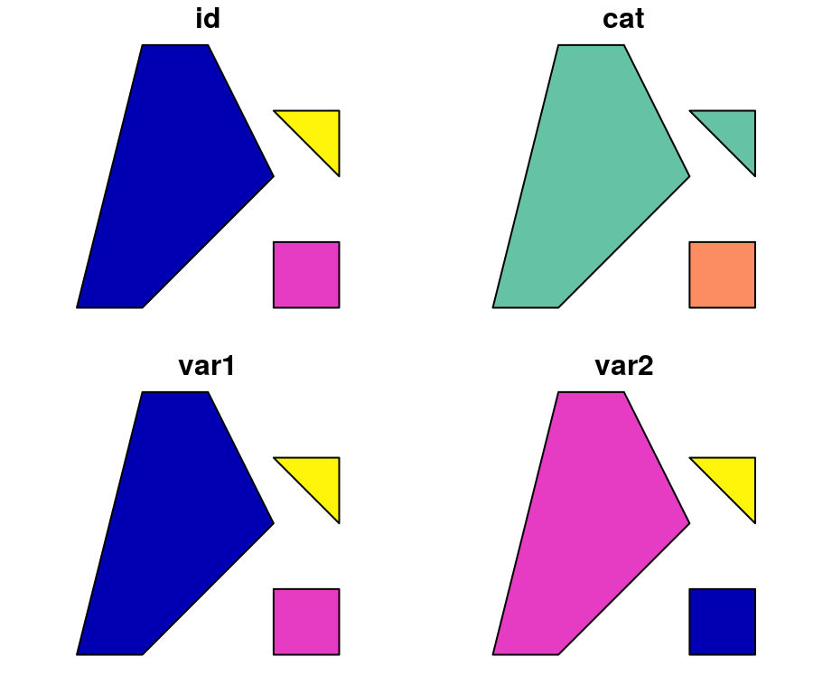
1.3.11.2 POLYGON
p1 <- rbind(c(0,0), c(1,0), c(3,2), c(2,4), c(1,4), c(0,0))
p2 <- rbind(c(3,0), c(4,0), c(4,1), c(3,1), c(3,0))
p3 <- rbind(c(3,3), c(4,2), c(4,3), c(3,3))
pol1_sfg <-st_polygon(list(p1))
pol2_sfg <-st_polygon(list(p2))
pol3_sfg <-st_polygon(list(p3))
(pol_sfc <- st_sfc(pol1_sfg, pol2_sfg, pol3_sfg, crs = 4326))Geometry set for 3 features
geometry type: POLYGON
dimension: XY
bbox: xmin: 0 ymin: 0 xmax: 4 ymax: 4
CRS: EPSG:4326pol_df <- data.frame(id= c(1,2,3), cat = c("A", "B", "A"),
var1 = c(10,20,30), var2 = c(2.3,1.9,4))
(pol_sf <- st_sf(pol_df,geometry = pol_sfc))Simple feature collection with 3 features and 4 fields
geometry type: POLYGON
dimension: XY
bbox: xmin: 0 ymin: 0 xmax: 4 ymax: 4
CRS: EPSG:4326
id cat var1 var2 geometry
1 1 A 10 2.3 POLYGON ((0 0, 1 0, 3 2, 2 ...
2 2 B 20 1.9 POLYGON ((3 0, 4 0, 4 1, 3 ...
3 3 A 30 4.0 POLYGON ((3 3, 4 2, 4 3, 3 3))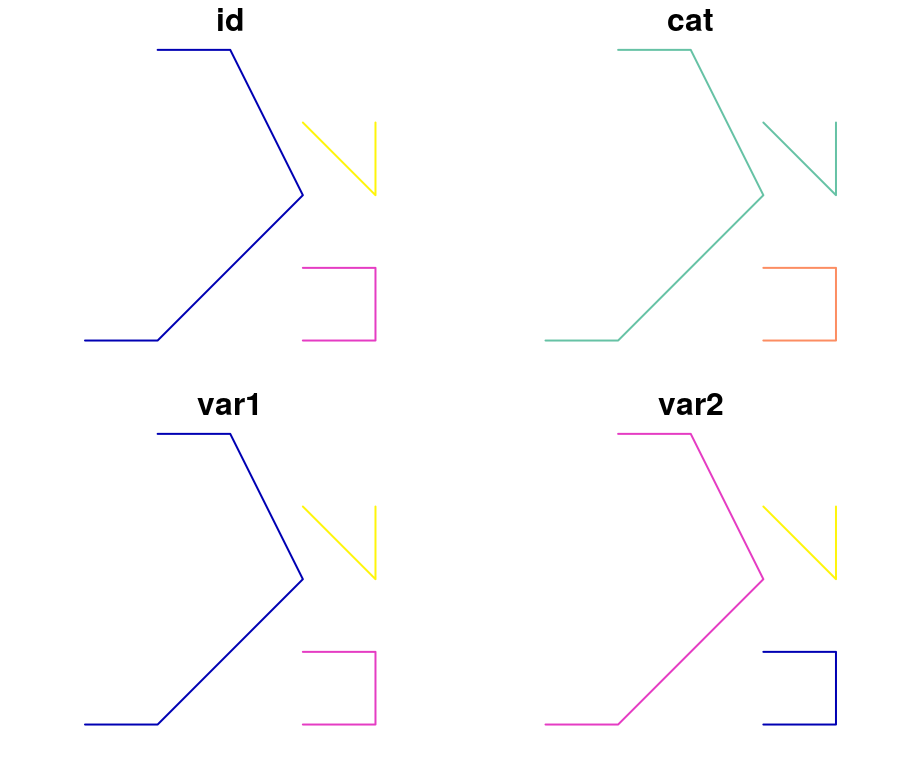
1.3.11.3 LINESTRING
p1 <- rbind(c(0,0), c(1,0), c(3,2), c(2,4), c(1,4))
p2 <- rbind(c(3,0), c(4,0), c(4,1), c(3,1))
p3 <- rbind(c(3,3), c(4,2), c(4,3))
ls1_sfg <-st_linestring(p1)
ls2_sfg <-st_linestring(p2)
ls3_sfg <-st_linestring(p3)
(ls_sfc <- st_sfc(ls1_sfg, ls2_sfg, ls3_sfg, crs = 4326))Geometry set for 3 features
geometry type: LINESTRING
dimension: XY
bbox: xmin: 0 ymin: 0 xmax: 4 ymax: 4
CRS: EPSG:4326ls_df <- data.frame(id= c(1,2,3), cat = c("A", "B", "A"),
var1 = c(10,20,30), var2 = c(2.3,1.9,4))
(ls_sf <- st_sf(ls_df,geometry = ls_sfc))Simple feature collection with 3 features and 4 fields
geometry type: LINESTRING
dimension: XY
bbox: xmin: 0 ymin: 0 xmax: 4 ymax: 4
CRS: EPSG:4326
id cat var1 var2 geometry
1 1 A 10 2.3 LINESTRING (0 0, 1 0, 3 2, ...
2 2 B 20 1.9 LINESTRING (3 0, 4 0, 4 1, ...
3 3 A 30 4.0 LINESTRING (3 3, 4 2, 4 3)
1.4 Géocodage d’adresses
Plusieurs packages permettent de géocoder des adresses.
photon(Giraud 2017b), utilise l’API de photon qui exploite les données d’OpenStreetMap. Ce package n’est pas sur le CRAN. Pour l’installer :
library(photon)
address <- c("19 rue Michel Bakounine, 29600 Morlaix, France",
"8 place Paul Ricoeur, 75013 Paris")
place <- photon::geocode(address, limit = 1, key = "place", lang = "fr")
place location osm_id osm_type name housenumber
1 19 rue Michel Bakounine, 29600 Morlaix, France 3241060871 N <NA> 19
2 8 place Paul Ricoeur, 75013 Paris 2608793979 N <NA> 8
street postcode city state country osm_key osm_value lon
1 Rue Michel Bakounine 29600 Morlaix Bretagne France place house -3.816435
2 Place Paul Ricoeur 75013 Paris Île-de-France France place house 2.382483
lat msg
1 48.59041 <NA>
2 48.82670 <NA>nominatim(Rudis 2019), utilise l’API de nominatim qui exploite les données d’OpenStreetMap. Ce package n’est pas sur le CRAN. Une clef d’API est nécessaire pour l’utiliser (obtenir une clef chez Maquest). Pour l’installer :
library(nominatim)
address <- c(URLencode("19 rue Michel Bakounine, 29600 Morlaix, France"),
URLencode("8 place Paul Ricoeur, 75013 Paris"))
place <- osm_geocode(address,
country_codes = "FR",
key = "UneClefMapQuestValide")
place place_id
1 44644129
2 27209988
licence
1 Data © OpenStreetMap contributors, ODbL 1.0. https://www.openstreetmap.org/copyright
2 Data © OpenStreetMap contributors, ODbL 1.0. https://www.openstreetmap.org/copyright
osm_type osm_id lat lon
1 node 3241060871 48.59041 -3.816435
2 node 2608793979 48.82670 2.382483
display_name
1 19, Rue Michel Bakounine, Ploujean, Kerozar, Morlaix, Finistère, Brittany, Metropolitan France, 29600, France
2 8, Place Paul Ricoeur, Gare, 13th Arrondissement, Paris, Ile-de-France, Metropolitan France, 75013, France
class type importance bbox_left bbox_top bbox_right bbox_bottom
1 place house 0.741 48.59036 48.59046 -3.816485 -3.816384
2 place house 0.631 48.82665 48.82675 2.382433 2.382533banR(Gombin and Chevalier 2017), pour des adresses en France uniquement.
library(banR)
address <- c("19 rue Michel Bakounine, 29600 Morlaix, France",
"8 place Paul Ricoeur, 75013 Paris")
place <- geocode_tbl(tbl = data.frame(address), adresse = "address")
place address latitude longitude
1 19 rue Michel Bakounine, 29600 Morlaix, France 48.59042 -3.816429
2 8 place Paul Ricoeur, 75013 Paris 48.82673 2.382450
result_label result_score result_type result_id
1 19 Rue Michel Bakounine 29600 Morlaix 0.78 housenumber ADRNIVX_0000000266085152
2 8 Place Paul Ricoeur 75013 Paris 0.93 housenumber ADRNIVX_0000000331930326
result_housenumber result_name result_street result_postcode result_city
1 19 Rue Michel Bakounine <NA> 29600 Morlaix
2 8 Place Paul Ricoeur <NA> 75013 Paris
result_context result_citycode
1 29, Finistère, Bretagne 29151
2 75, Paris, Île-de-France 75113Transformer les données en objet sf
library(sf)
library(cartography)
place_sf <- st_as_sf(place, coords = c("longitude", "latitude"), crs = 4326)
osm_fr <- getTiles(x = place_sf, zoom = 7 )
tilesLayer(osm_fr)
plot(st_geometry(place_sf), pch = 20, cex = 4, col = "red", add=T)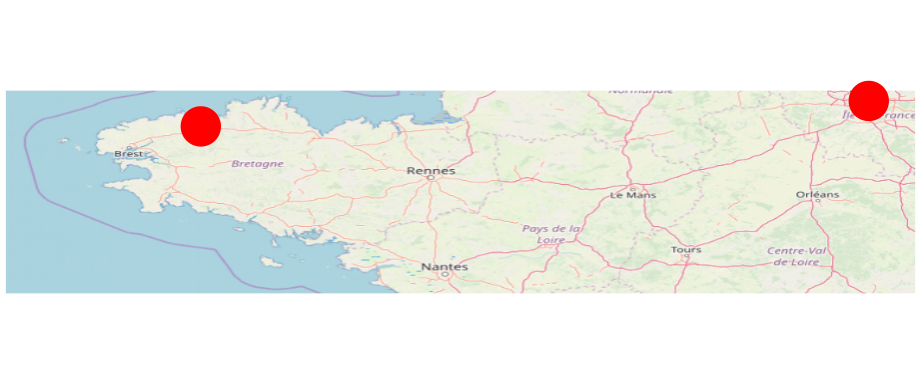
1.5 Importer des données OSM
OpenStreetMap (OSM) est un projet de cartographie participative qui a pour but de constituer une base de données géographiques libre à l’échelle mondiale. OpenStreetMap vous permet de voir, modifier et utiliser des données géographiques dans le Monde entier.
Le package osmdata (Padgham et al. 2017) permet d’extraire des données vectorielles depuis OSM.
library(sf)
library(osmdata)
library(sf)
mtq <- st_read(system.file("gpkg/mtq.gpkg", package="cartography"),
quiet = TRUE)
# Définition d'une bounding box
q <- opq(bbox=st_bbox(st_transform(mtq,4326)))
# Extraction des restaurants
res <- add_osm_feature(opq = q, key = 'amenity', value = "restaurant")
res.sf <- osmdata_sf(res)
res.sf.pts <- res.sf$osm_points[!is.na(res.sf$osm_points$amenity),]
resto <- st_transform(res.sf.pts, st_crs(mtq))
# Affichage des restaurants
plot(st_geometry(mtq), col="darkseagreen3", border="darkseagreen4",
bg = "lightblue1")
plot(st_geometry(resto), add=TRUE, pch=20, col = "#330A5FFF", cex = 0.5)
title("Répartition des restaurants")
mtext(text = "INSEE, 2016 - OSM, 2019",side = 1, line = -1, cex = 0.8)
1.6 Exercices
References
Giraud, Timothée. 2017b. Photon: Geocode Locations with Photon Api. https://github.com/rCarto/photon.
Gombin, Joel, and Paul-Antoine Chevalier. 2017. BanR: R Client for the Ban Api. https://CRAN.R-project.org/package=banR.
Padgham, Mark, Bob Rudis, Robin Lovelace, and Maëlle Salmon. 2017. “Osmdata.” The Journal of Open Source Software 2 (14). https://doi.org/10.21105/joss.00305.
Pebesma, Edzer. 2018a. Sf: Simple Features for R. https://CRAN.R-project.org/package=sf.
Pebesma, Edzer. 2018b. “Simple Features for R: Standardized Support for Spatial Vector Data.” The R Journal. https://journal.r-project.org/archive/2018/RJ-2018-009/index.html.
Rudis, Bob. 2019. Nominatim: Tools for Working with the ’Nominatim’ Api.